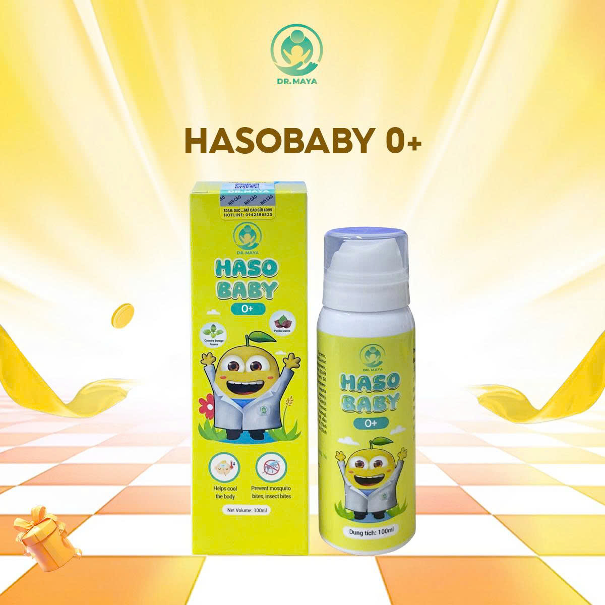
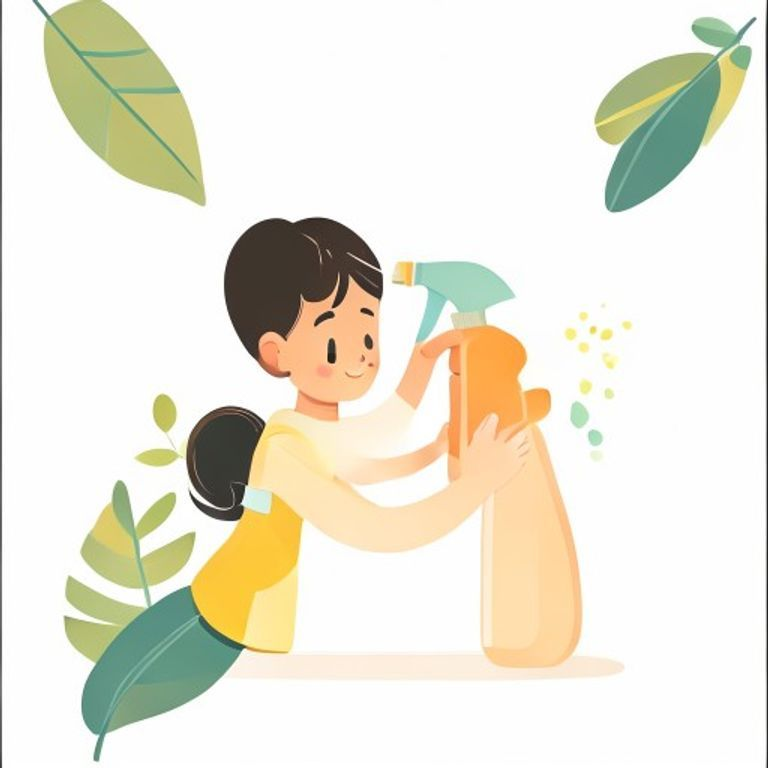
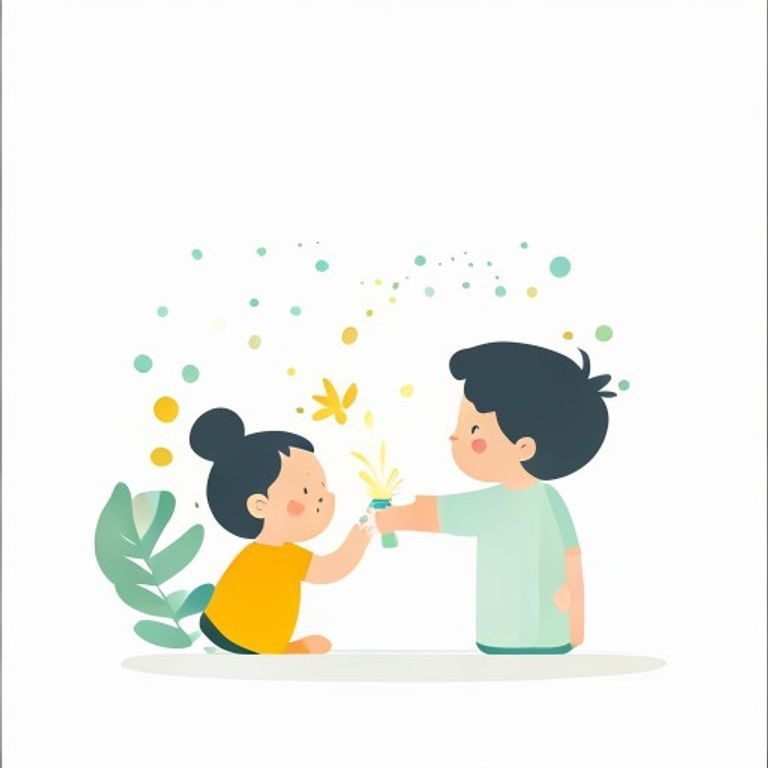

🎁 QUÀ TẶNG TỪ DR.MAYA × HASOBABY
Cẩm nang chích ngừa
an toàn cho bé
Lịch tiêm đầy đủ 0–24 tháng • Cách xử lý phản ứng sau tiêm • Dùng thuốc hạ sốt an toàn
Biên soạn bởi đội ngũ chuyên môn
DR.MAYA × HASOBABY
Phiên bản 1.1 • 05/2026 • 10 trang
01Lịch tiêm chủng mở rộng (TCMR) MIỄN PHÍ
Chương trình Tiêm Chủng Mở Rộng được Bộ Y Tế triển khai miễn phí tại trạm y tế phường/xã và bệnh viện công. Đây là lịch tối thiểu mọi bé Việt Nam đều cần.
| Mốc tuổi | Vắc xin | Phòng bệnh |
|---|
| Trong 24h sau sinh | BCG | Lao |
| Trong 24h sau sinh | Viêm gan B mũi 0 | Viêm gan B |
| 2 tháng | 5in1 (DPT-VGB-Hib) mũi 1 | Bạch hầu, Ho gà, Uốn ván, Hib, Viêm gan B |
| 2 tháng | OPV (uống) mũi 1 | Bại liệt |
| 2 tháng | Rotavin-M1 (uống) liều 1 🆕 mới vào TCMR | Tiêu chảy do Rotavirus |
| 3 tháng | 5in1 mũi 2 + OPV mũi 2 | (như mũi 1) |
| 3 tháng | Rotavin-M1 (uống) liều 2 | Tiêu chảy do Rotavirus |
| 4 tháng | 5in1 mũi 3 + OPV mũi 3 | (như mũi 1) |
| 5 tháng | IPV (tiêm) | Bại liệt |
| 9 tháng | Sởi mũi 1 | Sởi |
| 18 tháng | 5in1 mũi 4 (nhắc lại) | (như mũi 1) |
| 18 tháng | Sởi – Rubella (MR) | Sởi, Rubella |
📌 Mẹ ghi nhớ
Tổng cộng
12 mũi/liều TCMR trong 24 tháng đầu (gồm 2 liều Rota uống mới được đưa vào TCMR từ 2024). Sổ tiêm chủng giấy của trạm y tế sẽ ghi rõ — mẹ giữ kỹ vì cần dùng cho đăng ký học và xuất cảnh sau này.
💡 Mẹo nhỏ
Mẹ có thể đăng ký lịch nhắc qua app
Sổ sức khỏe điện tử (Bộ Y Tế) — báo tự động đến ngày tiêm.
Nguồn: Quyết định 1596/QĐ-BYT 2024 (bổ sung Rotavin-M1 vào TCMR) + Quyết định 1492/QĐ-BYT 2025 (lịch TCMR hiện hành) — Bộ Y Tế Việt Nam.
02Lịch tổng hợp theo tháng tuổi
Lịch tổng hợp TCMR (bắt buộc) + dịch vụ phổ biến. Mẹ có thể in trang này dán tường để theo dõi.
Sơ sinh
BCG (Lao) + Viêm gan B mũi 0 — tiêm trong 24h đầu tại bệnh viện sinh
2 tháng
5in1/6in1 mũi 1 + OPV mũi 1 + Rotavin-M1 liều 1 + Phế cầu mũi 1
3 tháng
5in1/6in1 mũi 2 + OPV mũi 2 + Rotavin-M1 liều 2 + Phế cầu mũi 2
4 tháng
5in1/6in1 mũi 3 + OPV mũi 3 | Rotateq liều 3 (nếu dùng vắc xin dịch vụ 3 liều)
5 tháng
IPV (Bại liệt tiêm)
6 tháng
Cúm mũi 1 | Phế cầu mũi 3 nhắc
9 tháng
Sởi mũi 1 + Viêm não Nhật Bản (Imojev) mũi 1 + Não mô cầu ACYW mũi 1
12 tháng
MMR (Sởi-Quai bị-Rubella) mũi 1 + Thủy đậu mũi 1 + Phế cầu nhắc
18 tháng
5in1 mũi 4 (nhắc) + Sởi-Rubella (MR)
24 tháng
Viêm não Nhật Bản mũi nhắc | Thương hàn (cho bé hay đi du lịch)
📖 Cách đọc
Chữ đậm = TCMR miễn phí (bắt buộc).
Chữ nghiêng = dịch vụ (tự chọn). Lịch có thể xê dịch ±2 tuần.
03Chuẩn bị trước khi tiêm
📅 Trước 1 tuần
- Kiểm tra sức khỏe — bé không sốt, không tiêu chảy, không cảm nặng. Nếu có, hoãn 3-7 ngày.
- Rà lại sổ tiêm — xem mũi gần nhất, mũi tiếp theo, cách bao nhiêu tuần.
- Đặt lịch hẹn — tránh giờ cao điểm (sáng thứ 2 & cuối tuần đông nhất).
🌅 Sáng hôm tiêm
- Cho bé ăn nhẹ trước 1h — không ăn quá no (dễ nôn), không để đói (dễ tụt đường).
- Mặc đồ rộng — áo cài nút hoặc liền thân ngắn tay để dễ vén tay/đùi cho y tá.
- Mang theo: sổ tiêm, bình nước/sữa, khăn xô, 1 món đồ chơi bé yêu thích, xịt Hasobaby để dùng ngay khi cần.
❓ 5 câu mẹ phải hỏi bác sĩ trước khi tiêm
- "Hôm nay con tiêm những mũi gì, vắc xin tên thương mại là gì?"
- "Nguồn gốc và hạn dùng vắc xin?" (yêu cầu xem vỏ hộp nếu có thể)
- "Mũi này có thể kết hợp với mũi dịch vụ khác cùng buổi không?"
- "Mũi tiếp theo cách bao lâu? Ngày chính xác là khi nào?"
- "Bé cần lưu ý gì sau tiêm? Có dấu hiệu nào phải gọi lại bệnh viện?"
📌 Mẹ ghi nhớ
Sau tiêm,
ở lại theo dõi 30 phút tại điểm tiêm. Đây là khoảng thời gian phản ứng nặng có thể xuất hiện — phải có y tá cấp cứu kịp thời.
045 phản ứng BÌNH THƯỜNG sau tiêm
Sau tiêm, cơ thể bé "kích hoạt" hệ miễn dịch để học cách nhận diện mầm bệnh. Đây là quá trình tự nhiên — 5 phản ứng dưới đây hoàn toàn bình thường, mẹ không cần quá lo lắng.
🌡️
1. Sốt nhẹ < 38.5°C
⏱ 1-2 ngày tự hết
Bé hơi hâm hấp, mặt đỏ. Cứ 4h đo lại 1 lần.
🔴
2. Sưng, đỏ chỗ tiêm
⏱ 2-3 ngày tự lặn
Vết tiêm sưng nhẹ, đỏ vài cm. Không xoa bóp.
😢
3. Quấy khóc nhiều
⏱ 1-2 ngày
Bé khó chịu do đau cơ + sốt nhẹ. Ôm vỗ về.
🍼
4. Biếng ăn / biếng bú
⏱ 1-3 ngày
Bé bú/ăn ít hơn 20-30%. Không ép, cho bú vặt.
😴
5. Lừ đừ, ngủ nhiều hơn bình thường
⏱ Trong 24h đầu sau tiêm
Bé ngủ sâu, mệt do cơ thể đang "làm việc" tạo kháng thể. Vẫn cho bú bình thường khi bé thức.
✅ Khi nào KHÔNG cần lo
Sốt < 38.5°C, bé vẫn tỉnh táo, vẫn bú/ăn được (dù ít), vẫn chơi nhẹ. Các triệu chứng
giảm dần sau 24-48h.
⚠️ Khi nào cần xử lý
Sốt > 38.5°C kéo dài 4h+, bé li bì khó đánh thức, bỏ bú hoàn toàn, vùng sưng to nhanh (> 5cm). Xem cách xử lý
ở Trang 6 (Hasobaby) và
Trang 7 (thuốc hạ sốt). Dấu hiệu nguy hiểm xem
Trang 8.
05Cách xử lý phản ứng sau tiêm
🌡️ 4 cách hạ sốt khoa học không cần thuốc
- Cho bé bú/uống đủ nước — bù mất nước do sốt.
- Lau ấm bằng khăn xô (~37°C) ở nách, bẹn, trán, gáy. KHÔNG nước lạnh.
- Mặc đồ thoáng, phòng 26-28°C. Không ủ kín.
- ⭐ Xịt Hasobaby ngay khi bé bắt đầu ấm — chi tiết bên dưới.

✓ AN TOÀN TỪ 0 THÁNG
🌿 Xịt thảo dược Hasobaby 0+
Không thuốc tây, không cồn, không paraben. 6 tinh chất thảo dược thẩm thấu qua da, hạ thân nhiệt nhẹ nhàng + giảm đau tại chỗ. Đạt chuẩn GMP, Bộ Y Tế cấp phép.
🌿 Tràm gió🌿 Bạc hà🌿 Húng chanh
🌿 Hương nhu🌿 Đinh hương🌿 Lô hội
⭐ DÙNG NGAY KHI BÉ BẮT ĐẦU ẤM (37–38°C) — không đợi đến lúc sốt cao. Xịt sớm = hỗ trợ hạ sốt sớm = hạn chế phải uống thuốc hạ sốt. Đây là điểm khác biệt quan trọng nhất.
💎 CÔNG DỤNG 1 — Hỗ trợ hạ sốt: 3 ĐIỂM VÀNG

2
Gáy
(sau cổ)

3
Sau tai
2 bên
Liều: 2-3 cú xịt mỗi điểm, lặp lại mỗi 4-6h khi bé còn ấm/sốt. Mặc đồ thoáng sau xịt.
💎 CÔNG DỤNG 2 — Giảm đau vết tiêm: 2 CÁCH
Cách 1 — Xịt xung quanh
Xịt 2-3 cú xung quanh vết tiêm, cách lỗ tiêm ~2cm. Tinh dầu thẩm thấu qua da giúp giảm đau và giảm sưng tại chỗ.
Cách 2 — Đắp khăn xịt
Xịt 5-7 cú vào khăn xô sạch, đắp xung quanh vết tiêm, chừa lỗ tiêm. Giữ 5-10 phút, lặp lại 2-3 lần/ngày.
⚠️ TUYỆT ĐỐI KHÔNG xịt trực tiếp vào lỗ tiêm hở hoặc vết thương chưa lành da.
😢 Quấy khóc: ôm da kề da, cho bú/ti giả, tắt đèn ru ngủ nhẹ.
😴 Lừ đừ: để bé ngủ, đánh thức 3-4h/lần để cho bú.
06Dùng thuốc hạ sốt an toàn cho bé
Khi xịt Hasobaby + lau ấm + bú đủ nước vẫn không đủ — đây là cách dùng thuốc đúng cách, đúng liều. Mẹ đọc kỹ trước khi cho con uống.
🩺 Khi nào cho bé dùng thuốc?
- ✅ Sốt ≥ 38.5°C kéo dài sau 1h xịt + lau ấm không hạ.
- ✅ Bé khó chịu, quấy khóc, không ngủ được vì sốt.
- ✅ Bé có tiền sử co giật do sốt → cho uống sớm hơn (từ 38°C).
- ⛔ Bé dưới 3 tháng tuổi — KHÔNG tự ý cho thuốc, ĐI KHÁM bác sĩ ngay.
⚖️ Bảng liều Paracetamol theo cân nặng (10–15 mg/kg/lần, cách 4–6h)
| Cân nặng bé | Liều mỗi lần | Gói Hapacol phù hợp |
|---|
| 4 – 7 kg | 60 – 100 mg | Hapacol 80mg — 1 gói |
| 8 – 12 kg | 100 – 180 mg | Hapacol 150mg — 1 gói |
| 13 – 17 kg | 150 – 250 mg | Hapacol 250mg — 1 gói |
| 18 – 25 kg | 200 – 375 mg | Hapacol 250mg — 1-1.5 gói |
⚠️ Tối đa 4 lần/24h. Tổng liều không vượt 60 mg/kg/ngày.
💊 3 dạng phổ biến — cách dùng đúng
🌿 MẸO HASOBABY — Giảm số lần dùng thuốc
Mục tiêu: dùng thuốc
1-2 lần/đợt sốt, không phải 3-4 lần. Cách phối hợp:
- Bé ấm 37-38°C: xịt Hasobaby + lau ấm → 60-80% bé hạ trước khi cần thuốc.
- Sốt > 38.5°C: uống thuốc + tiếp tục xịt Hasobaby → hạ nhanh hơn, ngủ ngon hơn.
- Chưa đến giờ uống liều tiếp (cách < 4h) mà bé ấm lại: xịt Hasobaby thay thế, không "dồn" thuốc.
🚨 Cảnh báo quan trọng
•
KHÔNG dùng Aspirin cho bé < 12 tuổi — nguy cơ hội chứng Reye (tổn thương não, gan).
•
KHÔNG kết hợp Paracetamol + Ibuprofen cùng lúc nếu không có chỉ định bác sĩ.
•
KHÔNG quá liều > 15 mg/kg/lần, không quá 4 lần/24h.
•
KHÔNG dùng thuốc > 3 ngày liên tục — đưa bé đi khám.
⚠️7 dấu hiệu NGUY HIỂM — đưa bé đi viện NGAY
🚨 KHẨN CẤP
Nếu bé có 1 trong 7 dấu hiệu dưới — KHÔNG chờ, KHÔNG tự xử lý, đi viện ngay
- Sốt cao > 39.5°C không hạ sau 1h xử lý đúng cách (lau ấm + xịt + uống thuốc).
- Co giật — bé giật cơ tay/chân/mắt, hoặc mất ý thức, gọi không phản ứng.
- Khóc thét dai dẳng > 3 tiếng liên tục không dỗ được, tiếng khóc khác lạ (rít cao, nức nở).
- Phát ban toàn thân / nổi mề đay xuất hiện trong vòng 15 phút – 4h sau tiêm.
- Thở khò khè, khó thở, môi tím, ngực phập phồng — dấu hiệu sốc phản vệ.
- Nôn ói liên tục (> 3 lần trong 1h), bỏ bú/ăn hoàn toàn, lừ đừ không tỉnh.
- Sưng phù to ở chỗ tiêm > 5cm, lan rộng, đỏ tím, đau dữ dội khi chạm.
Số khẩn cấp quốc gia — Cấp cứu 24/7
📞 115
Hà Nội: BV Nhi TƯ 024-6273-8532 • HCM: BV Nhi Đồng 1 028-3927-1119
📌 Khi đi cấp cứu, mang theo
Sổ tiêm chủng (để bác sĩ biết bé vừa tiêm vắc xin gì) • Tờ ghi giờ tiêm chính xác • Ghi lại triệu chứng và giờ xuất hiện
07FAQ — 10 câu hỏi mẹ hỏi nhiều nhất
Bé đang sổ mũi nhẹ có tiêm được không?
Có, nếu bé không sốt và không kèm ho nặng. Bác sĩ sẽ khám kiểm tra trước khi quyết định. Sổ mũi do dị ứng, thời tiết — vẫn tiêm được.
Lỡ bỏ mũi 2-3 tháng giờ mới quay lại, có phải tiêm lại từ đầu không?
Không. Lịch tiêm chỉ trễ chứ không phải lại từ đầu. Mẹ chỉ cần tiếp tục ở mũi gần nhất. Vắc xin đã tiêm vẫn còn hiệu lực.
Tiêm xong có tắm cho bé được không?
Có, sau 6-8h. Dùng nước ấm, tránh chà xát chỗ tiêm. Không tắm quá lâu, không ngâm bồn.
Có nên cho bé bú/ăn ngay sau tiêm?
Có, sau 30 phút theo dõi tại điểm tiêm. Cho bú/ăn nhẹ. Không ép nếu bé biếng — cho bú vặt nhiều lần là OK.
Tiêm dịch vụ và TCMR có thể kết hợp không?
Có và nên kết hợp. Phổ biến: TCMR (miễn phí) cho 5in1, Sởi, Bại liệt — dịch vụ bổ sung phế cầu, rota, thủy đậu, JEV. Cần lên lịch để tránh trùng tuần.
Bé sốt sau tiêm bao lâu là bình thường?
Sốt < 38.5°C trong 1-2 ngày sau tiêm là bình thường. Sốt > 39°C kéo dài > 48h, hoặc bé lừ đừ khó đánh thức → đi khám.
Có thể uống paracetamol dự phòng trước khi tiêm không?
KHÔNG nên. Nghiên cứu cho thấy uống paracetamol dự phòng có thể giảm đáp ứng miễn dịch của vắc xin. Chỉ dùng khi bé sốt thực sự > 38.5°C.
Tiêm trùng vắc xin (đã tiêm rồi tiêm lại) có nguy hiểm?
Đa số không nguy hiểm — cơ thể đã có kháng thể sẽ xử lý. Nhưng có thể gây phản ứng cục bộ mạnh hơn. Mẹ giữ sổ tiêm cẩn thận để tránh.
Bé sinh non lịch tiêm có khác không?
Tính theo tuổi thật (ngày sinh), không phải tuổi điều chỉnh. Bé sinh non vẫn tiêm theo lịch chuẩn. Nếu cân nặng < 1.5kg lúc tiêm BCG, sẽ hoãn — trao đổi bác sĩ.
Sau tiêm bao lâu có thể đi du lịch / cho bé ra ngoài?
Sau 48h, nếu bé khỏe và không sốt. Tránh đi xa ngay vì có thể có phản ứng muộn (24-72h). Mang theo Hasobaby & thuốc hạ sốt khi đi xa.
08Phụ lục & Lời cảm ơn
🌡️ Bảng theo dõi sốt 24h sau tiêm (in để điền)
| Giờ |
Nhiệt độ (°C) |
Đã xử lý gì |
Triệu chứng khác (quấy, bỏ bú, sưng…) |
| | | |
| | | |
| | | |
| | | |
| | | |
| | | |
Mẹ thân mến,
Cảm ơn mẹ đã tin tưởng Dr.Maya × Hasobaby đồng hành cùng con. Cuốn cẩm nang này được biên soạn từ kinh nghiệm thực tế của hàng ngàn mẹ đã đồng hành cùng team Dr.Maya — em hy vọng nó nhẹ gánh cho mẹ phần nào trong hành trình chăm con.
Tiêm chủng là lá chắn an toàn nhất mẹ có thể tặng con. Mỗi mũi tiêm là một lần con khỏe lên. Mỗi đêm sốt sau tiêm là một lần cơ thể con đang "tập trận" với kẻ thù vô hình — và mẹ chính là hậu phương vững nhất.
Có gì cần hỏi thêm, mẹ cứ nhắn em — đội ngũ Dược sĩ Dr.Maya luôn ở đây.
— Đội ngũ chuyên môn Dr.Maya × Hasobaby ❤️